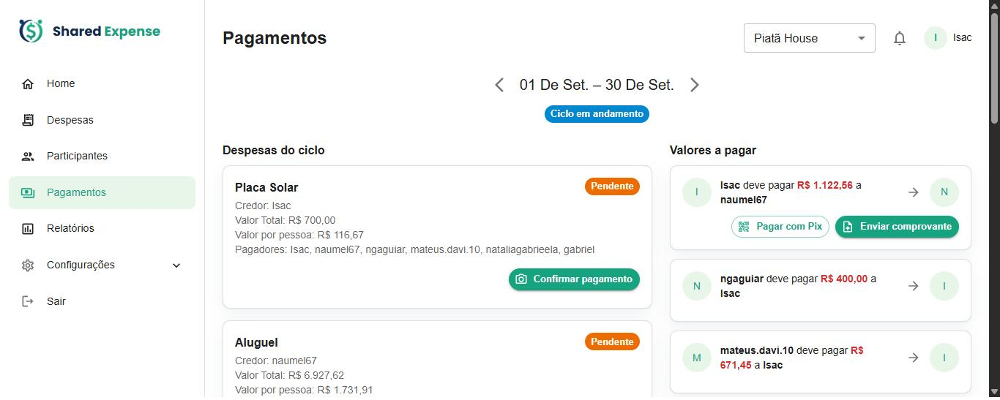
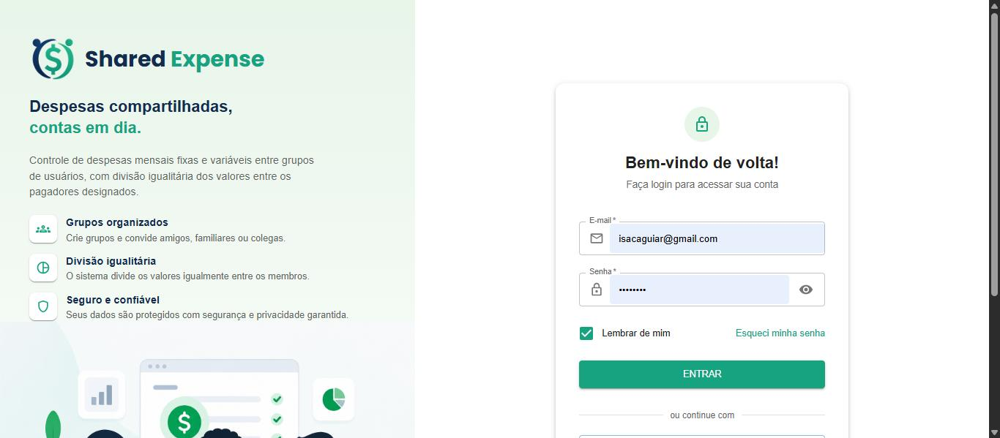
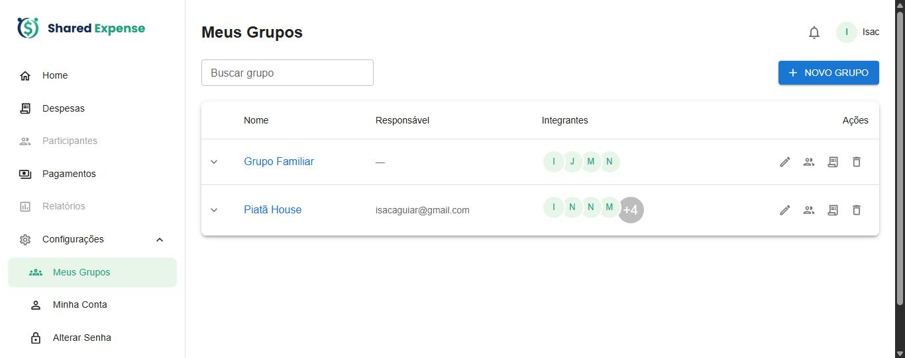
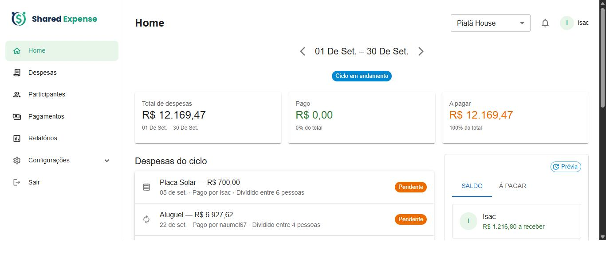
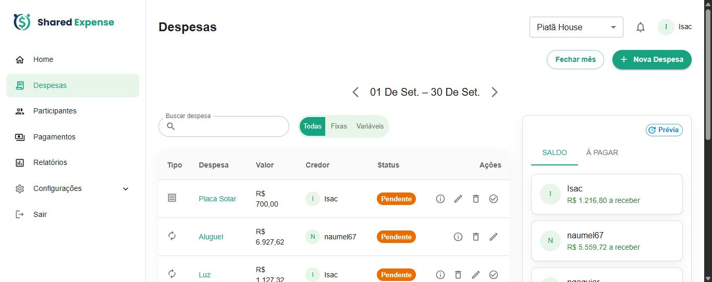
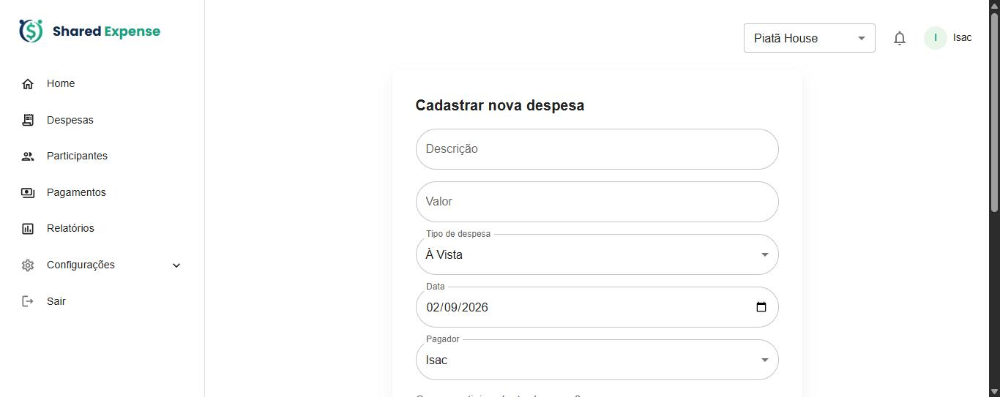
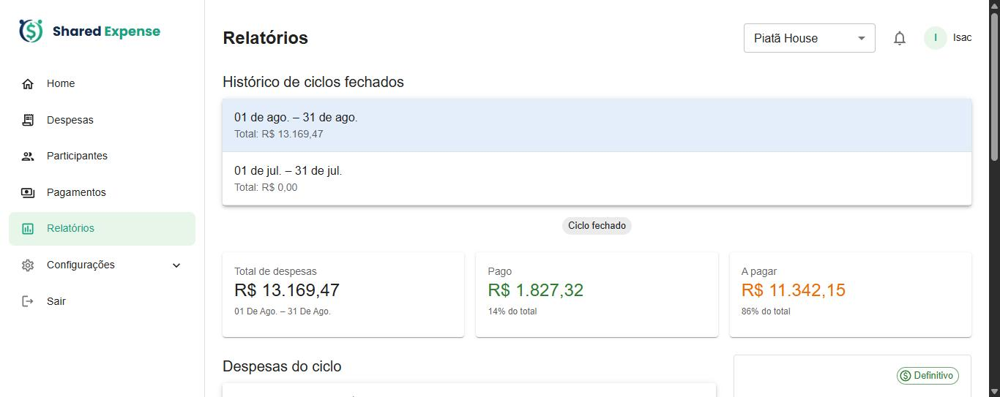

Manual do usuário
Como registrar os gastos do grupo, dividir os valores e acertar tudo com o menor número de Pix possível.
Aplicativo web para um grupo de pessoas — família, república, amigos — registrar despesas em comum e dividir os valores. Em vez de cada um pagar cada um, o app calcula automaticamente o menor número de transferências que acerta todas as contas do ciclo: ninguém faz um Pix que poderia ser evitado. Você acompanha, mês a mês, quem deve quanto a quem, e paga ou cobra por Pix dentro do próprio app.
Exemplo · Isac pagou R$ 90 (conta dividida entre 3)
Dois Pix, não seis. O app resolve os acertos par a par.


Informe e-mail e senha e clique em Entrar. Novos usuários entram por convite: ao ser adicionado a um grupo, você recebe um e-mail com um link para criar a senha e ativar a conta.

Lista os grupos de que você participa, com o responsável e os integrantes. Novo Grupo cria um grupo — informe nome, descrição e, se quiser, um “dia de fechamento”. Clique no nome do grupo para abrir a Home dele.

Visão do ciclo selecionado: Total de despesas, Pago e A pagar, a lista de despesas e, à direita, o painel com duas abas — Saldo (líquido de cada pessoa) e À pagar (a liquidação mínima). O selo Prévia indica que os números ainda mudam até o ciclo fechar.

Todas as despesas do ciclo, com Tipo, Valor, Credor (quem pagou) e Status (Paga / Pendente). Dá para buscar, filtrar por Fixas / Variáveis, editar, excluir e marcar como paga. Fechar mês congela os números do período.
Ao clicar em marcar como paga (o ✓ da linha), abre um popup: anexe uma foto do comprovante, escreva uma descrição do pagamento — por exemplo “pago em dinheiro” ou “Pix agendado”, até 500 caracteres — ou os dois. É preciso informar pelo menos um deles para confirmar. A descrição aparece nos detalhes da despesa.
Depois de paga, o credor ainda pode corrigir o comprovante sem desfazer o pagamento: o ícone do clipe (Editar comprovante, ao lado de Desfazer pagamento) abre o mesmo popup, já com a foto e a descrição atuais. Dá para trocar a foto, remover a foto ou ajustar a descrição, e também anexar a primeira foto a uma despesa que foi paga sem comprovante. A despesa continua paga, com a mesma data; só é preciso que sobre a foto ou a descrição. Quando o ciclo está totalmente quitado (todas as despesas pagas e todos os acertos confirmados), ele vira histórico: o ícone deixa de aparecer e, para corrigir, é preciso desfazer o pagamento e marcá-lo como pago de novo.

Preencha Descrição, Valor, Tipo (À Vista, Parcelada ou Fixa), a Data e o Pagador (quem pagou de fato). Em “Quem participa desta despesa?” marque só as pessoas que entram nessa divisão — o valor é rateado igualmente entre elas.
Em Despesas do ciclo, o credor confirma o pagamento no mesmo popup da tela Despesas: foto do comprovante, descrição ou os dois. Depois de paga, o cartão da despesa ganha o botão Editar comprovante, que faz o mesmo que o ícone da tela Despesas (trocar, remover ou anexar a foto e ajustar a descrição sem desfazer o pagamento) e também deixa de aparecer quando o ciclo está totalmente quitado. Em Valores a pagar, quem deve usa Pagar com Pix (abre o QR Code / copia-e-cola do credor) e Enviar comprovante para registrar o pagamento; aqui a foto é obrigatória e a descrição é opcional. Reenviar o comprovante substitui a foto e a descrição anteriores.

Histórico dos ciclos já fechados. Clique em um deles para rever os totais, as despesas e os saldos daquele período — agora com valores definitivos.
Um ciclo é o período das despesas — o mês calendário ou, se o grupo tiver um dia de fechamento, o intervalo entre um fechamento e o próximo, como a fatura de um cartão.
Ao usar Fechar mês, os números daquele ciclo ficam congelados e passam a aparecer em Relatórios.